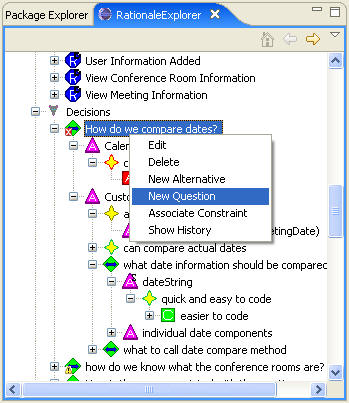
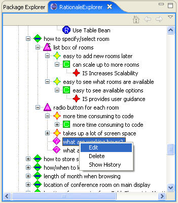
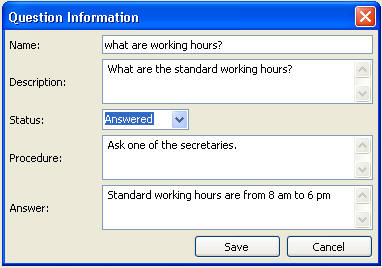

In order to create a new question, right-click any name of a decision problem or a alternative under "Decision" in the RationaleExplorer and choose New Question, which will bring up the question editor. Or we could edit an existing question by right-click the name of an existing question and choose edit or by double-clicking the name of the question. See the following figures:


The following figure shows the Question Editor. For each question, there is the Status that indicates if it is answered or not, a Procedure that describes the steps that must be taken to get the answer, and the Answer (once known).
